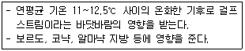
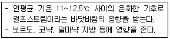
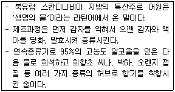
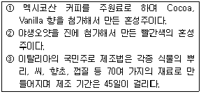
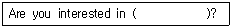
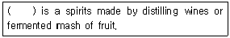
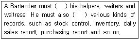
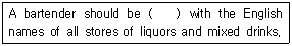

조주기능사 (2013-01-27 기출문제)
1과목: 주류학개론
1. 혼성주(Componded Liquor)에 대한 설명 중 틀린 것은?
- 칵테일 제조나 식후주로 사용된다.
- 발효주에 초근목피의 침출물을 혼합하여 만든다.
- 색채, 향기, 감미, 알코올의 조화가 잘 된 술이다.
- 혼성주는 고대 그리스 시대에 약용으로 사용되었다.
(정답률: 70%)

2. 커피의 향미를 평가하는 순서로 가장 적합한 것은?
- 미각(맛) → 후각(향기) → 촉각(입안의 느낌)
- 색 → 촉각(입안의 느낌) → 미각(맛)
- 촉각(입안의 느낌) → 미각(맛) → 후각(향기)
- 후각(향기) → 미각(맛) → 촉각(입안의 느낌)
(정답률: 95%)
3. 다음 중 혼성주에 해당되는 것은?
- Beer
- Drambuie
- Olmeca
- Grave
(정답률: 87%)
4. 블렌디드(Blended) 위스키가 아닌 것은?
- Chivas Regal 18년
- Glenfiddich 15년
- Royal Salute 21년
- Dimple 12년
(정답률: 56%)
5. 증류주(Distilled Liquor)에 포함되지 않는 것은?
- 위스키(Whisky)
- 맥주(Beer)
- 브랜디(Brandy)
- 럼(Rum)
(정답률: 93%)
6. 리큐르(liqueur)가 아닌 것은?
- Benedictine
- Anisette
- Augier
- Absinthe
(정답률: 43%)
7. 브랜디(Brandy)와 코냑(Cognac)에 대한 설명으로 옳은 것은?
- 브랜디와 코냑은 재료의 성질에 차이가 있다.
- 코냑은 프랑스의 코냑지방에서 만들었다.
- 코냑은 브랜디를 보관 연도별로 구분한 것이다.
- 브랜디와 코냑은 내용물의 알코올 함량에 차이가 크다.
(정답률: 92%)
8. American Whiskey가 아닌 것은?
- Jim Beam
- Wild Turkey
- Jameson
- Jack Daniel
(정답률: 60%)
9. 우리나라의 고유한 술 중 증류주에 속하는 것은?
- 경주법주
- 동동주
- 문배주
- 백세주
(정답률: 64%)
10. 다음 중 그 종류가 다른 하나는?
- Vienna coffee
- Cappuccino coffee
- Espresso coffee
- Irish coffee
(정답률: 82%)
11. 독일의 리슬링(Riesling)와인에 대한 설명으로 틀린 것은?
- 독일의 대표적 와인이다.
- 살구향, 사과향 등의 과실향이 주로 난다.
- 대부분 무감미 와인(Dry Wine)이다.
- 다른 나라 와인에 비해 비교적 알코올 도수가 낮다.
(정답률: 63%)
12. 와인을 막고 있는 코르크가 곰팡이에 오염되어 와인의 맛이 변하는 것으로 와인에서 종이 박스 향취, 곰팡이냄새 등이 나는 것을 의미하는 현상은?
- 네고시앙(negociant)
- 부쇼네(bouchonne)
- 귀부병(noble rot)
- 부케(bouquet)
(정답률: 65%)
13. 브랜디의 제조공정에서 증류한 브랜디를 열탕소독 한White Oak Barrel에 담기 전에 무엇을 채워 유해한 색소나 이물질을 제거하는가?
- Beer
- Gin
- Red Wine
- White Wine
(정답률: 69%)
14. 탄산음료의 CO2에 대한 설명으로 틀린 것은?
- 미생물의 발육을 억제한다.
- 향기의 변화를 예방한다.
- 단맛과 부드러운 맛을 부여한다.
- 청량감과 시원한 느낌을 준다.
(정답률: 80%)
15. 차의 분류가 옳게 연결된 것은?
- 발효차 - 얼그레이
- 불발효차 - 보이차
- 반발효차 - 녹차
- 후발효차 - 자스민
(정답률: 60%)
16. 셰리의 숙성 중 솔레라(solera) 시스템에 대한 설명으로 옳은 것은?
- 소량씩의 반자동 블렌딩 방식이다.
- 영(young)한 와인보다 숙성된 와인을 채워주는 방식이다.
- 빈티지 셰리를 만들 때 사용한다.
- 주정을 채워 주는 방식이다.
(정답률: 51%)
17. 다음 중 상면발효 맥주에 해당하는 것은?
- Lager Beer
- Porter Beer
- Pilsner Beer
- Dortmunder Beer
(정답률: 69%)
18. 럼(Rum)의 주원료는?
- 대맥(Rye)과 보리(Barley)
- 사탕수수(sugar cane)와 당밀(molasses)
- 꿀(Honey)
- 쌀(Rice)과 옥수수(Corn)
(정답률: 97%)
19. 리큐르(Liqueur)의 제조법과 가장 거리가 먼 것은?
- 블렌딩법(Blending)
- 침출법(Infusion)
- 증류법(Distillation)
- 에센스법(Essence process)
(정답률: 66%)
20. 다음에서 설명하는 프랑스의 기후는?

- 대서양 기후
- 내륙성 기후
- 지중해성 기후
- 대륙성 기후
(정답률: 48%)
21. 와인 양조 시 1%의 알콜을 만들기 위해 약 몇 그램의 당분이 필요한가?

- 1g /L
- 10g / L
- 16.5g / L
- 20.5g / L
(정답률: 65%)
22. 와인 테이스팅의 표현으로 가장 부적합한 것은?
- Moldy(몰디) - 곰팡이가 낀 과일이나 나무 냄새
- Raisiny(레이즈니) - 건포도나 과숙한 포도 냄새
- Woody(우디) - 마른 풀이나 꽃 냄새
- Corky(코르키) - 곰팡이 낀 코르크 냄새
(정답률: 63%)
23. 저온 살균되어 저장 가능한 맥주는?
- Draught Beer
- Unpasteurized Beer
- Draft Beer
- Lager Beer
(정답률: 68%)
24. 토닉 워터(tonic water)에 대한 설명으로 틀린 것은?
- 무색투명한 음료이다.
- Gin과 혼합하여 즐겨 마신다.
- 식욕증진과 원기를 회복시키는 강장제 음료이다.
- 주로 구연산, 감미료, 커피 향을 첨가하여 만든다.
(정답률: 83%)
25. 다음에서 설명하는 것은?

- 보드카(Vodka)
- 럼(Rum)
- 아쿠아비트(Aquavit)
- 브랜디(Brandy)
(정답률: 82%)
26. 다음의 설명에 해당하는 혼성주를 옳게 연결한 것은?

- ① 샤르뜨뢰즈(Chartreuse), ② 시나(Cynar), ③ 캄파리(Campari)
- ① 파샤(Pasha), ② 슬로우 진(Sloe Gin), ③ 캄파리(Campari)
- ① 깔루아(Kahlua), ② 시나(Cynar), ③ 캄파리(Campari)
- ① 깔루아(Kahlua), ② 슬로우 진(Sloe Gin), ③ 캄파리(Campari)
(정답률: 81%)
27. 생강을 주원료로 만든 탄산음료는?
- Soda Water
- Tonic Water
- Perrier Water
- Ginger Ale
(정답률: 100%)
28. 민속주 중 모주(母酒)에 대한 설명으로 틀린 것은?
- 조선 광해군 때 인목대비의 어머니가 빚었던 술이라고 알려져 있다.
- 증류해서 만든 제주도의 대표적인 민속주이다.
- 막걸리에 한약재를 넣고 끓인 해장술이다.
- 계피가루를 넣어 먹는다.
(정답률: 64%)
29. 와인을 분류하는 방법의 연결이 틀린 것은?
- 스파클링 와인 - 알코올 유무
- 드라이 와인 - 맛
- 아페리티프 와인 - 식사용도
- 로제 와인 - 색깔
(정답률: 88%)
30. 감미 와인(Sweet Wine)을 만드는 방법이 아닌 것은?
- 귀부포도(Noble rot Grape)를 사용하는 방법
- 발효 도중 알코올을 강화하는 방법
- 발효 시 설탕을 첨가하는 방법(Chaptalization)
- 햇빛에 말린 포도를 사용하는 방법
(정답률: 58%)
2과목: 주장관리개론
31. 뜨거운 물 또는 차가운 물에 설탕과 술을 넣어서 만든 칵테일은?
- toddy
- punch
- sour
- sling
(정답률: 59%)
32. 믹싱글라스(Mixing Glass)에서 제조된 칵테일을 잔에 따를 때 사용하는 기물은?
- Measure Cup
- Bottle Holder
- strainer
- Ice Bucket
(정답률: 90%)
33. Portable Bar에 포함되지 않는 것은?
- Room Service Bar
- Banquet Bar
- Catering Bar
- Western Bar
(정답률: 52%)
34. 와인은 병에 침전물이 가라앉았을 때 이 침전물이 글라스에 같이 따라지는 것을 방지하기 위해 사용하는 도구는?
- 와인 바스켓
- 와인 디켄터
- 와인 버켓
- 코르크스크류
(정답률: 85%)
35. 다음 중 바텐더의 직무가 아닌 것은?
- 글라스류 및 칵테일용 기물을 세척 정돈한다.
- 바텐더는 여러 가지 종류의 와인에 대하여 충분한 지식을 가지고 서비스를 한다.
- 고객이 바 카운터에 있을 때는 바텐더는 항상 서서 있어야 한다.
- 호텔 내외에서 거행되는 파티도 돕는다.
(정답률: 35%)
36. 생맥주(Draft Beer) 취급요령 중 틀린 것은?
- 2~3℃의 온도를 유지할 수 있는 저장시설을 갖추어야한다.
- 술통 속의 압력은 12~14 pound로 일정하게 유지해야한다.
- 신선도를 유지하기 위해 입고 순서와 관계없이 좋은 상태의 것을 먼저 사용한다.
- 글라스에 서비스할 때 3~4℃정도의 온도가 유지 되어야 한다.
(정답률: 94%)
37. 바 카운터의 요건으로 가장 거리가 먼 것은?
- 카운터의 높이는 1~1.5m 정도가 적당하며 너무 높아서는 안 된다.
- 카운터는 넓을수록 좋다.
- 작업대(Working board)는 카운터 뒤에 수평으로 부착시켜야 한다.
- 카운터 표면은 잘 닦여지는 재료로 되어 있어야 한다.
(정답률: 84%)
38. 싱가폴 슬링(Singapore Sling) 칵테일의 재료로 적합하지 않은 것은?
- 드라이 진(Dry Gin)
- 체리브랜디(Cherry-Flavored Brandy)
- 레몬쥬스(Lemon Juice)
- 토닉워터(Tonic Water)
(정답률: 55%)
39. 주장(Bar)에서 기물의 취급방법으로 틀린 것은?
- 금이 간 접시나 글라스는 규정에 따라 폐기한다.
- 은기물은 은기물 전용 세척액에 오래 담가두어야 한다.
- 크리스털 글라스는 가능한 손으로 세척한다.
- 식기는 같은 종류별로 보관하며 너무 많이 쌓아두지 않는다.
(정답률: 81%)
40. 저장관리원칙과 가장 거리가 먼 것은?
- 저장위치 표시
- 분류저장
- 품질보전
- 매상증진
(정답률: 93%)
41. 와인의 빈티지(Vintage)가 의미하는 것은?
- 포도주의 판매 유효 연도
- 포도의 수확 년도
- 포도의 품종
- 포도주의 도수
(정답률: 97%)
42. 스파클링 와인(Sparkling Wine) 서비스 방법으로 틀린 것은?
- 병을 천천히 돌리면서 천천히 코르크가 빠지게 한다.
- 반드시 ‘뻥’ 하는 소리가 나게 신경 써서 개봉한다.
- 상표가 보이게 하여 테이블에 놓여있는 글라스에 천천히 넘치지 않게 따른다.
- 오랫동안 거품을 간직 할 수 있는 풀루트(Flute)형 잔에 따른다.
(정답률: 82%)
43. 주장(Bar)에서 주문받는 방법으로 옳지 않은 것은?
- 가능한 빨리 주문을 받는다.
- 분위기나 계절에 어울리는 음료를 추천한다.
- 추가 주문은 잔이 비었을 때에 받는다.
- 시간이 걸리더라도 구체적이고 명확하게 주문받는다.
(정답률: 47%)
44. 칵테일글라스를 잡는 부위로 옳은 것은?
- Rim
- Stem
- Body
- Bottom
(정답률: 83%)
45. 쿨러(cooler)의 종류에 해당되지 않는 것은?
- Jigger cooler
- Cup cooler
- Beer cooler
- Wine cooler
(정답률: 78%)
46. 다음 중 소믈리에(Sommelier)의 역할로 틀린 것은?
- 손님의 취향과 음식과의 조화, 예산 등에 따라 와인을 추천한다.
- 주문한 와인은 먼저 여성에게 우선적으로 와인 병의 상표를 보여주며 주문한 와인임을 확인시켜 준다.
- 시음 후 여성부터 차례로 와인을 따르고 마지막에 그 날의 호스트에게 와인을 따라준다.
- 코르크 마개를 열고 주빈에게 코르크 마개를 보여주면서 시큼하고 이상한 냄새가 나지 않는지, 코르크가 잘 젖어있는지를 확인시킨다.
(정답률: 69%)
47. 다음 시럽 중 나머지 셋과 특징이 다른 것은?
- grenadine syrup
- can sugar syrup
- simple syrup
- plain syrup
(정답률: 79%)
48. 맨하탄 칵테일(Manhattan Cocktail)의 가니시(Garnish)로 옳은 것은?
- Cocktail Olive
- Pearl Onion
- Lemon
- Cherry
(정답률: 63%)
49. 바(Bar) 작업대와 가터레일(Gutter Rail)의 시설 위치로 옳은 것은?
- Bartender 정면에 시설되게 하고 높이는 술 붓는 것을 고객이 볼 수 있는 위치
- Bartender 후면에 시설되게 하고 높이는 술 붓는 것을 고객이 볼 수 없는 위치
- Bartender 우측에 시설되게 하고 높이는 술 붓는 것을 고객이 볼 수 있는 위치
- Bartender 좌측에 시설되게 하고 높이는 술 붓는 것을 고객이 볼 수 없는 위치
(정답률: 72%)
50. 와인의 마개로 사용되는 코르크 마개의 특성으로 가장 거리가 먼 것은?
- 온도변화에 민감하다.
- 코르크 참나무의 외피로 만든다.
- 신축성이 뛰어나다.
- 밀폐성이 있다.
(정답률: 62%)
3과목: 고객서비스영어
51. What is an alternative form of " I beg your pardon? " ?
- Excuse me
- Wait for me
- I'd like to know
- Let me see
(정답률: 65%)
52. 다음 중 change가 나머지 셋과 다른 의미로 쓰인 것은?
- Do you have Change for a dollar?
- Keep the change.
- I need some change for the bus.
- Let's try a new restaurant for a change.
(정답률: 65%)
53. 다음 ( ) 안에 적합한 것은?

- make cocktail
- made cocktail
- making cocktail
- a making cocktail
(정답률: 74%)
54. Which is the most famous orange flavored cognac liqueur?
- Grand Marnier
- Drambuie
- Cherry Heering
- Galliano
(정답률: 63%)
55. Which of the following is not fermented liquor?
- Aquavit
- Wine
- Sake
- Toddy
(정답률: 36%)
56. Which is the correct one as a base of bloody Mary in the following?
- Gin
- Rum
- Vodka
- Tequila
(정답률: 56%)
57. ( ) 안에 알맞은 것은?

- Liqueur
- Bitter
- Brandy
- Champagne
(정답률: 60%)
58. ( ) 안에 적합한 것은?

- take, manage
- supervise, handle
- respect, deal
- manage, careful
(정답률: 59%)
59. 다음 ( ) 안에 적합한 것은?

- familiar
- warm
- use
- accustom
(정답률: 60%)
60. Which country does Campari come from?
- Scotland
- America
- Fran
- Italy
(정답률: 54%)